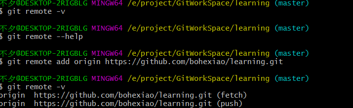

本地仓库与GitHub的交互
- 推送
- 初始化本地库
- 创建GitHub 远程库<前面有介绍>
- 复制GitHub 地址：https://github.com/bohexiao/learning.git
- 使用 git remote -v #查看本地库中添加的远程仓库地址

当添加别名后可以使用git remote -v 去进行查看
- 使用 git remote add [别名] [远程地址] ##使用git remote add 去添加别名，使用别名去代替我们的远程url，毕竟每次输入这么长的地址也是毕竟繁琐的
- git remote add origin https://github.com/bohexiao/learning.git
- 使用git push <远程地址> <推送的分支名称>
- git push origin master

- push成功后 ，GitHub可以看到推送的内容

- 克隆
- 使用 git clone <仓库远程url>
- 从远程库克隆项目，git会帮我们做三件事
- 完整的把远程库下载下来
- 初始化本地项目
- 添加 远程地址 别名 origin
- 如图，创建一个learning_lhc 文件夹，并从远程仓库clone项目
- 克隆了一个learning的仓库


- 进入learning文件夹
- 可以看到.git 文件，说明给我们初始化了这个仓库
- 使用git remote -v 查看，可以看到clone时帮我们把远程地址别名origin也创建了

- 邀请成员加入团队[当其他人需要提交代码到你的仓库时->1、加入团队；2、团队外协助；前面文章有阐述]
- 点击Settings

- 点击Collaborators ，输入要邀请成员的用户名或者邮箱

- 当你邀请的成员去访问你的github时，会提示他加入
- win10 有一个凭据管理器，会帮我们存储git账号，密码；所以我们在git bash中只要输入一次，当我们想要切换其他账号登录时，只需删除这个凭据管理器中保存的账户信息即可


- 团队成员拉取代码
- git fetch [远程地址别名] [分支名称] && git merge [远程地址别名]/[分支名称]
- git pull [远程地址别名] [分支名称]
拉取属于读操作，不需要登录；以上两条命令都可以拉取远程代码，区别在于：
git fetch [远程地址别名] [分支名称] 不会去修改本地的文件，而是在本地创建并更新本地远程分支。即创建并更新[远程地址别名]/xxx 分支，拉取代码到origin/xxx分支上，当我们确认代码没有问题之后，使用git merge [远程地址别名] [分支名称] 命令去合并到工作区
我们可以使用git checkout[远程地址别名]/xxx分支 命令去查看更新的代码，确保无误后在git merge [远程地址别名]/xxx分支更新
git pull [远程地址别名] [分支名称] 直接会更新本地文件
git pull==git fetch +git merge
- git checkout [远程地址别名]/[分支名称] ###切换到远程分支
- 协同开发时冲突解决
- 解决方式
- 和本地库冲突解决方式一样
- 案例